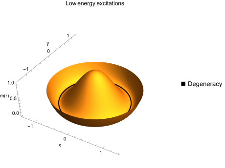

Essentiaylly, one expands the free energy functional \(F[m]\) in \(m\) and its gradients while satisfying the proposed symmetries. The coarse-grained extension to the Ising Hamiltonian is given by a Landau-Ginzburg Hamiltonian
\[ H[m] = \int d\mathbf{r}\left[ \frac{a}{2}m^2 + bm^4 + \frac{K}{2} (\nabla m)^2 +\dots\right] \]This has profound consequences in the statistical theory of fields (using saddle-point approximations to recover Landau’s theory), but I won’t discuss this here (see Kardar’s book). Here, \(m(\mathbf{x})\) can be interpreted to be order-parameters, but in essence are random fields, i.e. a field with a Boltzmann weight.
The above expression is not a kinetic expression. If we want to analyze the relaxation of a system to the equilibrium configuration, we should introduce dynamics of the field \(m(\mathbf{x})\), which are given by a Langevin equation
\[ \dot{\mathbf{x}}=\mathbf{v}(\mathbf{x})+\boldsymbol{\eta}(t), \]where the second term, the stochastic velocity, has zero mean. It is direct to see that for our Landau-Ginzburg Hamiltonian we have
\begin{align} \partial_t m_i(\mathbf{x},t) &=\mu F_i(\mathbf{x})+\eta_i(\mathbf{x},t)\\ &=-\mu\frac{\delta F_i}{\delta m_i(\mathbf{x})}+\eta_i(\mathbf{x},t)\\ &=-\mu(am_i+4b m_i|\mathbf{m}|^2-K\nabla^2m_i)+\eta_i(\mathbf{x},t)\\ \partial_t \vec{m}(\mathbf{x},t)&=-\mu(a\vec{m}+4b \vec{m}|\vec{m}|^2-K\nabla^2\vec{m})+\eta_i(\vec{x},t) \end{align}
This last equation is the time-dependent Landau-Ginzburg Hamiltonian. Since this is a nonlinear equation, we resort to numerical methods to solve for the dynamics.
The order parameter or field has no restrictions on its dimensions. Simulating a bidimensional magnetization can be achieved by using complex numbers (say real for \(m_x\) and imaginary for \(m_y\)). Lets focus on a scalar field first and see how it evolves in time, first in 2D and then in 3D.
Consider a complex field \(\phi\). We set the parameter \(a\) to be negative for us to have Goldstone modes. We further set \(b=1.0 + 1.5i\) after some examples I saw after lurking online for the time-dependent LG equation.
To simulate the 2D case, we can use Julia’s DifferentialEquations.jl package to solve for a complex field \(\phi\). The spatial gradients were implemented as convolution operators using custom finite difference kernels, which were generated by the finite_diff_coefficient and get_laplace_kernel functions.
function finite_diff_coefficient(_ord::Int64)
if _ord == 2
return [1,-2,1]
elseif _ord == 4
return [-1/12, 4/3, -5/2, 4/3, -1/12]
elseif _ord == 6
return [1/90, -3/20, 3/2, -49/18,3/2,-3/20,1/90]
elseif _ord == 8
return [-1/560,8/315,-1/5,8/5,-205/72,8/5,-1/5,8/315,-1/560]
end
end
The idea for this is to be able to implement the kernel in any number of dimensions, therefore these functions work for both 2D and 3D (and even 1D if you want to try it out).
function get_laplace_kernel(_dim::Int64,_ord::Int64)
base_ker = finite_diff_coefficient(_ord)
kernel = zeros(fill(length(base_ker),_dim)...)
mid_index = _ord÷2+1
kernel[fill(mid_index,ndims(kernel)-1)...,:] .= base_ker # middle of middles
perm_ind = collect(permutations(1:_dim))#[1:_dim-1:end]
if _dim == 3
filter!(_i -> levicivita(_i) < 0, perm_ind)
end
kernel = mapreduce(_i -> permutedims(kernel,_i),+,perm_ind)
#two_dim_ker += permutedims(two_dim_ker)
return centered(kernel) # return centered version of kernel (0 = middle)
end
Finally, the dynamics were defined in the diff_eq function, which computes the time derivative of the field \(u\) based on the parameters \(\mu\), \(a\), \(b\), \(K\), and the Laplacian kernel. The periodic boundary conditions were handled using circular convolution from the ImageFiltering package in Julia (thankful I did not have to program the convolutions myself!). This approach may be most efficient for 2D arrays, and makes it simpler to implement and worry about the physics rather than the programming details (like the periodic boundary conditions).
function diff_eq(u , p, t)
# dp/dt = mu*F+eta
μ,a,b,K,del_sq,dx = p
return -μ*(a * u + 4*b*abs2.(u) .* u - K * imfilter(u, del_sq, "circular") / dx^2) # periodic boudnary conditions
end
The following heatmap shows the results of an initial random spin configuration (like with the ising model). I believe the sustained oscillations are due to the system exploring the possible configurations. For example, in a 1D Heisenberg model (XY model), one can think of the order parameter \(\langle\vec{s}\rangle\) to be degenerate since (for the certain parameters) rotations around the \(\hat{z}\) axis will not affect the free energy. Such states are called low-energy excitations of the system.

As seen above, the order parameter is “free” to explore all the configurations around the black line. However, when we initialize the system in a purely real field \(\phi\) (i.e. \(b\in\mathbb{R}\)), there are no low-energy excitations present, and instead the system relaxes towards a single minima.
One can check that this absence of low-energy excitations can also happen for a complex-valued field (\(b\in\mathbb{C}\)), as long as \(a>0\).
I have already explained that the above functions work for ay dimension. However, the only change is that in 3D, multiplication becomes a bit more expensive, and we’re dealing with even more data-points. It is convenient to use a simple workhorse for solving the dynamics, the Euler method with small time step. We also include a random (Gaussian) velocity in each time-step as to account for random fluctuations.
Here, rather than starting with a random distribution, we start with a Gaussian field at the origin. As expected, low-energy excitations emerge.
A friend interested in phase separation (and more experience in physics than I) suggested I read about the Cahn-Hilliard model after showing him the simluations above. Modifying the above code is trivial (just includes another convolution); below is a simulation of such separation using a balanced mixture (following the Cahn-Hilliard model), when constrained to a box (i.e. no periodic boundary conditions).
There is a great discussion on so called dissipative stochastic models (i.e. kinetic Ising models) in the wonderful book by Chaikin and Lubensky. It should be fun to implement the remaining models in the A-J list shown in page 467.